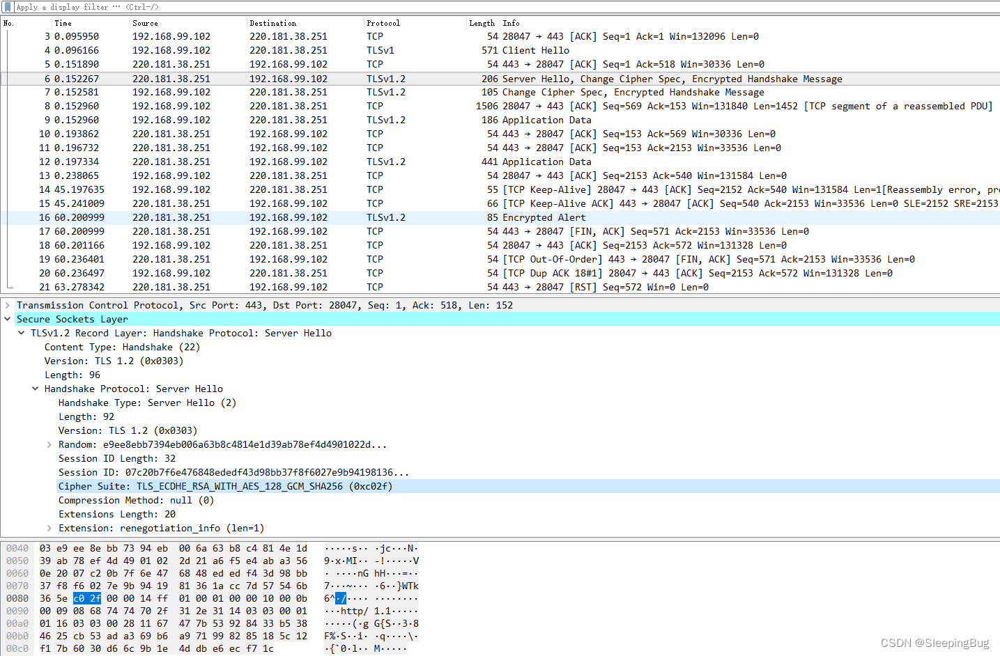

理解 TLS_ECDHE_RSA_WITH_AES_128_GCM_SHA256-CSDN博客
Excerpt
文章浏览阅读9.3k次，点赞10次，收藏20次。简单理解TLS_ECDHE_RSA_WITH_AES_128_GCM_SHA256的含义_tls_ecdhe_rsa_with_aes_128_gcm_sha256
首先批评一下CSDN有几篇打着”深度理解”标题的文章，让人看了相当失望。
其次说明一下，本文并没有深度解析各种算法的流程和原理，仅仅对TLS_ECDHE_RSA_WITH_AES_128_GCM_SHA256 这一串字符作一点解释。
我们先收集资料：
1，RFC官方文档
官方文档1：https://datatracker.ietf.org/doc/html/rfc4492
官方文档2：https://datatracker.ietf.org/doc/html/rfc5289
RFC4492截取：
TLS握手流程
2
3
4
5
6
7
8
9
10
11
12
13
14
15
16
17
18
19
20
21
22
23
24
25
------ ------
ClientHello -------->
ServerHello
Certificate*
ServerKeyExchange*
CertificateRequest*+
<-------- ServerHelloDone
Certificate*+
ClientKeyExchange
CertificateVerify*+
[ChangeCipherSpec]
Finished -------->
[ChangeCipherSpec]
<-------- Finished
Application Data <-------> Application Data
* message is not sent under some conditions
+ message is not sent unless client authentication
is desired
Figure 1: Message flow in a full TLS handshake
服务器证书类型
2
3
4
5
6
7
8
9
10
11
12
13
14
15
16
17
18
19
20
21
---------------------- -----------------------
ECDH_ECDSA Certificate MUST contain an
ECDH-capable public key. It
MUST be signed with ECDSA.
ECDHE_ECDSA Certificate MUST contain an
ECDSA-capable public key. It
MUST be signed with ECDSA.
ECDH_RSA Certificate MUST contain an
ECDH-capable public key. It
MUST be signed with RSA.
ECDHE_RSA Certificate MUST contain an
RSA public key authorized for
use in digital signatures. It
MUST be signed with RSA.
Table 3: Server Certificate Types
RFC5289截取：
2
3
4
5
6
7
8
9
10
11
12
13
14
15
16
17
18
19
20
21
22
23
24
25
26
27
The second eight cipher suites use the same asymmetric algorithms as
those in the previous section but use the new authenticated
encryption modes defined in TLS 1.2 with AES in Galois Counter Mode
(GCM) [<a href="https://datatracker.ietf.org/doc/html/rfc5289#ref-GCM" rel="nofollow" title="GCM">GCM</a>]:
CipherSuite TLS_ECDHE_ECDSA_WITH_AES_128_GCM_SHA256 = {0xC0,0x2B};
CipherSuite TLS_ECDHE_ECDSA_WITH_AES_256_GCM_SHA384 = {0xC0,0x2C};
CipherSuite TLS_ECDH_ECDSA_WITH_AES_128_GCM_SHA256 = {0xC0,0x2D};
CipherSuite TLS_ECDH_ECDSA_WITH_AES_256_GCM_SHA384 = {0xC0,0x2E};
CipherSuite TLS_ECDHE_RSA_WITH_AES_128_GCM_SHA256 = {0xC0,0x2F};
CipherSuite TLS_ECDHE_RSA_WITH_AES_256_GCM_SHA384 = {0xC0,0x30};
CipherSuite TLS_ECDH_RSA_WITH_AES_128_GCM_SHA256 = {0xC0,0x31};
CipherSuite TLS_ECDH_RSA_WITH_AES_256_GCM_SHA384 = {0xC0,0x32};
These cipher suites use authenticated encryption with additional data
algorithms AEAD_AES_128_GCM and AEAD_AES_256_GCM described in
[<a href="https://datatracker.ietf.org/doc/html/rfc5116" rel="nofollow" title="RFC5116">RFC5116</a>]. GCM is used as described in [<a href="https://datatracker.ietf.org/doc/html/rfc5288" rel="nofollow" title="RFC5288">RFC5288</a>].
The PRFs SHALL be as follows:
o For cipher suites ending with _SHA256, the PRF is the TLS PRF
[<a href="https://datatracker.ietf.org/doc/html/rfc5246" rel="nofollow" title="RFC5246">RFC5246</a>] with SHA-256 as the hash function.
o For cipher suites ending with _SHA384, the PRF is the TLS PRF
[<a href="https://datatracker.ietf.org/doc/html/rfc5246" rel="nofollow" title="RFC5246">RFC5246</a>] with SHA-384 as the hash function.
2，从wiki查一下当辅助资料
我们直接从https://en.wikipedia.org/wiki/Cipher_suite截取内容：
Each cipher suite has a unique name that is used to identify it and to describe the algorithmic contents of it. Each segment in a cipher suite name stands for a different algorithm or protocol. An example of a cipher suite name: TLS_ECDHE_RSA_WITH_AES_128_GCM_SHA256
The meaning of this name is:
- TLS defines the protocol that this cipher suite is for; it will usually be TLS.
- ECDHE indicates the key exchange algorithm being used.
- RSA authentication mechanism during the handshake.
- AES session cipher.
- 128 session encryption key size (bits) for cipher.
- GCM type of encryption (cipher-block dependency and additional options).
- SHA (SHA2)hash function. For a digest of 256 and higher. Signature mechanism. Indicates the message authentication algorithm which is used to authenticate a message.
- 256 Digest size (bits).
3，从Ciphersuite.info查询资料
同时，我们从 https://ciphersuite.info/cs/TLS_ECDHE_RSA_WITH_AES_128_GCM_SHA256/
截取内容
Secure Cipher Suite
RSA Authentication:
There are reports that servers using the RSA authentication algorithm with keys longer than 3072-bit may experience heavy performance issues leading to connection timeouts and even service unavailability if many clients open simultaneous connections.
IANA name:
TLS_ECDHE_RSA_WITH_AES_128_GCM_SHA256
OpenSSL name:
ECDHE-RSA-AES128-GCM-SHA256
GnuTLS name:
TLS_ECDHE_RSA_AES_128_GCM_SHA256
Hex code:
0xC0, 0x2F
TLS Version(s):
TLS1.2
Protocol:
Transport Layer Security (TLS)
Key Exchange:
Elliptic Curve Diffie-Hellman Ephemeral (ECDHE)
Authentication:
Rivest Shamir Adleman algorithm (RSA)
Encryption:
AEAD Advanced Encryption Standard with 128bit key in Galois/Counter mode (AES 128 GCM)
Hash:
Secure Hash Algorithm 256 (SHA256)
Included in RFC:
Machine-readable:
4，微软资料
https://docs.microsoft.com/en-us/windows/win32/secauthn/cipher-suites-in-schannel
截取内容
A cipher suite is a set of cryptographic algorithms. The schannel SSP implementation of the TLS/SSL protocols use algorithms from a cipher suite to create keys and encrypt information. A cipher suite specifies one algorithm for each of the following tasks:
- Key exchange
- Bulk encryption
- Message authentication
Key exchange algorithms protect information required to create shared keys. These algorithms are asymmetric (public key algorithms) and perform well for relatively small amounts of data.
Bulk encryption algorithms encrypt messages exchanged between clients and servers. These algorithms are symmetric and perform well for large amounts of data.
Message authentication algorithms generate message hashes and signatures that ensure the integrity of a message.
Developers specify these elements by using ALG_ID data types. For more information, see Specifying Schannel Ciphers and Cipher Strengths.
In earlier versions of Windows, TLS cipher suites and elliptical curves were configured by using a single string:

Different Windows versions support different TLS cipher suites and priority order. See the corresponding Windows version for the default order in which they are chosen by the Microsoft Schannel Provider.
5，最后我们小结一下
顺便先用wireshark抓包分析一下
由此小结一下 TLS_ECDHE_RSA_WITH_AES_128_GCM_SHA256的含义
- 1）TLS：Transport Layer Security (TLS)，表明了密钥套件的协议
- 2）ECHDE：Elliptic Curve Diffie-Hellman Ephemeral (ECDHE)，表明了密钥交换的算法
- 3）RSA：Rivest Shamir Adleman algorithm (RSA)，表明了签名加密算法、握手期间的身份认证机制。
- ECHDE_RSA，用于决定客户端与服务器之间在握手时如何身份验证。
- 当服务器配置ECC证书时，加密套件只能选择XXX_ECDSA_XXX或者ECDH_XXX。
当服务器配置RSA证书时，只能选择RSA_XXX或者ECDHE_RSA_XXX形式的加密套件。 - ECDHE_RSA，表明了证书必须是RSA签名的，证书里的公钥必须是RSA的公钥。
- 4）AES_128_GCM，用于加密消息流。上面的ciphersuite.info原话直译是：在 Galois/Counter 模式下具有 128 位密钥的高级加密标准 (AES 128 GCM)。其中，
- AES：Advanced Encryption Standard，_AES，会话加密算法。_用于加密消息流
- 128：会话加密密钥的大小（128位）
- GCM：GCM ( Galois/Counter Mode) 指的是该对称加密采用Counter模式，并带有GMAC消息认证码。二者分别保证了加密算法的保密性、完整性。
- 5）SHAR256，Secure Hash Algorithm 256 (SHA256)，消息认证码算法 使用SHA算法，长度是256位，用于创建消息摘要，消息流每个数据块的加密散列。
- 6）整体上，显然这是TLS握手过程中Server Hello里面携带的信息，由两个字节表示。我们可以从TLS_ECDHE_RSA_WITH_AES_128_GCM_SHA256分析出，从数据交换身份验证到会话加密、消息加密都有算法约定
- 从 TLS 握手开始，在这过程中两个通信方打开安全连接并交换公钥
在 TLS 握手期间，双方会生成会话密钥，会话密钥用于加密和解密 TLS 握手之后的所有通信
每一个新会话中使用不同的会话密钥来加密通信
TLS 确保服务器方或用户与之交互的网站确实是它们声称的身份
TLS 还确保数据没有被篡改，因为传输中包含消息身份验证码（MAC）